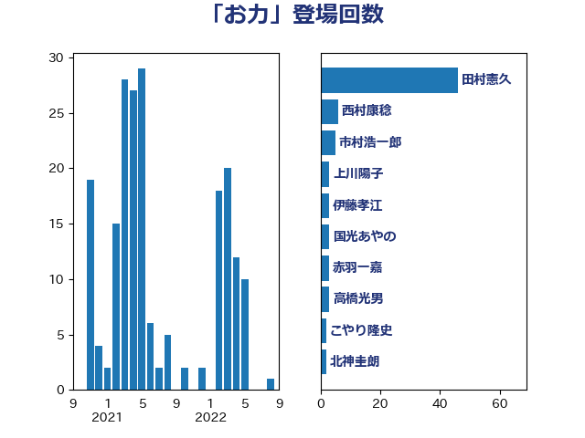

単語「お力」

| 田村憲久 | 自由民主党 | 46 回 |
| 西村康稔 | 自由民主党 | 6 回 |
| 市村浩一郎 | 日本維新の会 | 5 回 |
| 上川陽子 | 自由民主党 | 3 回 |
| 伊藤孝江 | 公明党 | 3 回 |
| 国光あやの | 自由民主党 | 3 回 |
| 赤羽一嘉 | 公明党 | 3 回 |
| 高橋光男 | 公明党 | 3 回 |
| こやり隆史 | 自由民主党 | 2 回 |
| 北神圭朗 | 無所属 | 2 回 |
| 吉田宣弘 | 公明党 | 2 回 |
| 堤かなめ | 立憲民主党 | 2 回 |
| 寺田静 | 無所属 | 2 回 |
| 尾崎正直 | 自由民主党 | 2 回 |
| 末松信介 | 自由民主党 | 2 回 |
| 森屋隆 | 立憲民主党 | 2 回 |
| 田嶋要 | 立憲民主党 | 2 回 |
| 西銘恒三郎 | 自由民主党 | 2 回 |
| 足立敏之 | 自由民主党 | 2 回 |
| 三浦信祐 | 公明党 | 1 回 |
| 上月良祐 | 自由民主党 | 1 回 |
| 下条みつ | 立憲民主党 | 1 回 |
| 伊藤渉 | 公明党 | 1 回 |
| 佐々木さやか | 公明党 | 1 回 |
| 古屋範子 | 公明党 | 1 回 |
| 吉川ゆうみ | 自由民主党 | 1 回 |
| 和田有一朗 | 日本維新の会 | 1 回 |
| 和田義明 | 自由民主党 | 1 回 |
| 嘉田由紀子 | 無所属 | 1 回 |
| 國重徹 | 公明党 | 1 回 |
| 塩村あやか | 立憲民主党 | 1 回 |
| 大岡敏孝 | 自由民主党 | 1 回 |
| 大島敦 | 立憲民主党 | 1 回 |
| 大西健介 | 立憲民主党 | 1 回 |
| 大野泰正 | 自由民主党 | 1 回 |
| 室井邦彦 | 日本維新の会 | 1 回 |
| 宮崎政久 | 自由民主党 | 1 回 |
| 寺田学 | 立憲民主党 | 1 回 |
| 小林鷹之 | 自由民主党 | 1 回 |
| 小泉進次郎 | 自由民主党 | 1 回 |
| 小西洋之 | 立憲民主党 | 1 回 |
| 小野寺五典 | 自由民主党 | 1 回 |
| 山崎正昭 | 自由民主党 | 1 回 |
| 岩屋毅 | 自由民主党 | 1 回 |
| 平井卓也 | 自由民主党 | 1 回 |
| 平沢勝栄 | 自由民主党 | 1 回 |
| 斎藤嘉隆 | 立憲民主党 | 1 回 |
| 新谷正義 | 自由民主党 | 1 回 |
| 東徹 | 日本維新の会 | 1 回 |
| 梅村みずほ | 日本維新の会 | 1 回 |
| 梅谷守 | 立憲民主党 | 1 回 |
| 櫻井周 | 立憲民主党 | 1 回 |
| 櫻田義孝 | 自由民主党 | 1 回 |
| 水岡俊一 | 立憲民主党 | 1 回 |
| 江島潔 | 自由民主党 | 1 回 |
| 池田佳隆 | 自由民主党 | 1 回 |
| 河野太郎 | 自由民主党 | 1 回 |
| 浜地雅一 | 公明党 | 1 回 |
| 滝波宏文 | 自由民主党 | 1 回 |
| 牧原秀樹 | 自由民主党 | 1 回 |
| 田中健 | 国民民主党 | 1 回 |
| 田畑裕明 | 自由民主党 | 1 回 |
| 矢倉克夫 | 公明党 | 1 回 |
| 石垣のりこ | 立憲民主党 | 1 回 |
| 石川博崇 | 公明党 | 1 回 |
| 石川大我 | 立憲民主党 | 1 回 |
| 石田昌宏 | 自由民主党 | 1 回 |
| 礒崎哲史 | 国民民主党 | 1 回 |
| 神津たけし | 立憲民主党 | 1 回 |
| 神田憲次 | 自由民主党 | 1 回 |
| 秋野公造 | 公明党 | 1 回 |
| 篠原豪 | 立憲民主党 | 1 回 |
| 舞立昇治 | 自由民主党 | 1 回 |
| 舩後靖彦 | れいわ新選組 | 1 回 |
| 芳賀道也 | 国民民主党 | 1 回 |
| 若林健太 | 自由民主党 | 1 回 |
| 萩生田光一 | 自由民主党 | 1 回 |
| 落合貴之 | 立憲民主党 | 1 回 |
| 藤原崇 | 自由民主党 | 1 回 |
| 藤川政人 | 自由民主党 | 1 回 |
| 藤田文武 | 日本維新の会 | 1 回 |
| 西岡秀子 | 国民民主党 | 1 回 |
| 西村智奈美 | 立憲民主党 | 1 回 |
| 西野太亮 | 自由民主党 | 1 回 |
| 赤池誠章 | 自由民主党 | 1 回 |
| 赤澤亮正 | 自由民主党 | 1 回 |
| 足立康史 | 日本維新の会 | 1 回 |
| 辻元清美 | 立憲民主党 | 1 回 |
| 野田聖子 | 自由民主党 | 1 回 |
| 金子俊平 | 自由民主党 | 1 回 |
| 関芳弘 | 自由民主党 | 1 回 |
| 阿部知子 | 立憲民主党 | 1 回 |
| 音喜多駿 | 日本維新の会 | 1 回 |
| 高木かおり | 日本維新の会 | 1 回 |